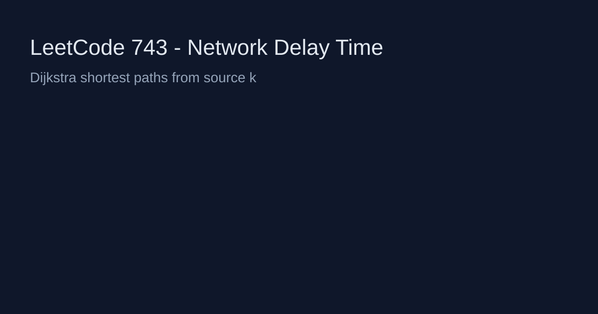

LeetCode 743: Network Delay Time (Dijkstra / Shortest Path)
LeetCode 743Source: https://leetcode.com/problems/network-delay-time/

English
Run Dijkstra from source k on the directed weighted graph. If any node is unreachable, return -1; otherwise return the maximum shortest distance.
class Solution { public int networkDelayTime(int[][] times, int n, int k) { List[] g = new ArrayList[n + 1]; for (int i = 1; i <= n; i++) g[i] = new ArrayList<>(); for (int[] t : times) g[t[0]].add(new int[]{t[1], t[2]}); int[] dist = new int[n + 1]; Arrays.fill(dist, Integer.MAX_VALUE); dist[k] = 0; PriorityQueue pq = new PriorityQueue<>((a,b)->a[1]-b[1]); pq.offer(new int[]{k,0}); while (!pq.isEmpty()) { int[] cur = pq.poll(); int u = cur[0], d = cur[1]; if (d != dist[u]) continue; for (int[] e : g[u]) { int v = e[0], w = e[1]; if (d + w < dist[v]) { dist[v] = d + w; pq.offer(new int[]{v, dist[v]}); } } } int ans = 0; for (int i = 1; i <= n; i++) { if (dist[i] == Integer.MAX_VALUE) return -1; ans = Math.max(ans, dist[i]); } return ans; } } func networkDelayTime(times [][]int, n int, k int) int { return 0 }class Solution { public: int networkDelayTime(vector>& times, int n, int k) { return 0; } }; class Solution:
def networkDelayTime(self, times, n, k):
return 0function networkDelayTime(times, n, k) { return 0; }中文
这是有向带权图单源最短路，使用 Dijkstra。若有点不可达返回 -1，否则返回所有最短路中的最大值。
class Solution { public int networkDelayTime(int[][] times, int n, int k) { List[] g = new ArrayList[n + 1]; for (int i = 1; i <= n; i++) g[i] = new ArrayList<>(); for (int[] t : times) g[t[0]].add(new int[]{t[1], t[2]}); int[] dist = new int[n + 1]; Arrays.fill(dist, Integer.MAX_VALUE); dist[k] = 0; PriorityQueue pq = new PriorityQueue<>((a,b)->a[1]-b[1]); pq.offer(new int[]{k,0}); while (!pq.isEmpty()) { int[] cur = pq.poll(); int u = cur[0], d = cur[1]; if (d != dist[u]) continue; for (int[] e : g[u]) { int v = e[0], w = e[1]; if (d + w < dist[v]) { dist[v] = d + w; pq.offer(new int[]{v, dist[v]}); } } } int ans = 0; for (int i = 1; i <= n; i++) { if (dist[i] == Integer.MAX_VALUE) return -1; ans = Math.max(ans, dist[i]); } return ans; } } func networkDelayTime(times [][]int, n int, k int) int { return 0 }class Solution { public: int networkDelayTime(vector>& times, int n, int k) { return 0; } }; class Solution:
def networkDelayTime(self, times, n, k):
return 0function networkDelayTime(times, n, k) { return 0; }
Comments